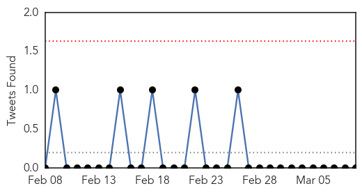
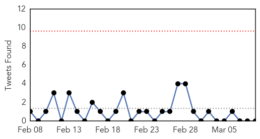
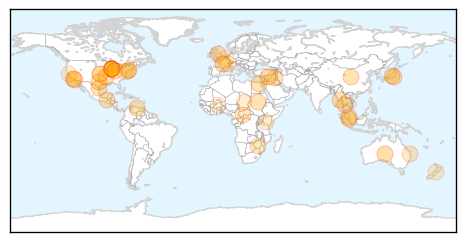

Influenza
30-Day Web Trend
0 alerts, 0 warnings

30-Day Twitter Trend
0 alerts, 0 warnings

Article Locations

Article Confidences

Top Articles:
- 0.997
- Across the USA, flu season winding down
- 0.984
- Experts predict heavy winter flu toll
- 0.971
- Missouri reports avian influenza at Carthage-area turkey farm
- 0.967
- Avian flu detected in Missouri turkey flock
- 0.963
- 2005 Central Florida State Fair E. coli Outbreak
- 0.951
- Officials hopeful that avian flu virus will be contained
- 0.951
- Flu Scan for Mar 09, 2015
- 0.922
- MDA confirms avian influenza in second Missouri facility
- 0.908
- Researchers assess causes of febrile illnesses in Tanzanian children
- 0.900
- Flu pandemic begins
- 0.894
- Avian flu confirmed at turkey farm near Asbury
- 0.819
- Avian influenza confirmed in Missouri turkey flock
- 0.734
- H5N2 strikes Missouri turkey farm
- 0.668
- Government to look into claims that stricter rules on school absenteeism led to illnesses spreading
- 0.518
- American Dryer's eXtremeAir Cold Plasma Clean(R) Technology Kills Influenza A Virus
Top Tweets:
-
No tweets found for Mar 09, 2015
Unknown
30-Day Web Trend
1 alerts, 0 warnings

30-Day Twitter Trend
0 alerts, 0 warnings

Article Locations

Article Confidences

Top Articles:
- 0.926
- Sudan Tribune: Plural news and views on Sudan
- 0.923
- Can a facility's administration force nurses to take the flu vaccine? What are my rights?
- 0.922
- Outreach efforts continue at UCLA for possible 'superbug' patients
- 0.919
- More Than 160 Exposed to Deadly 'Superbug' at Hospital
- 0.917
- Chicago Tribune
- 0.917
- Chicago Tribune
- 0.917
- Chicago Tribune
- 0.917
- Chicago Tribune
- 0.917
- Chicago Tribune
- 0.917
- Chicago Tribune
- 0.917
- Chicago Tribune
- 0.917
- Chicago Tribune
- 0.917
- Chicago Tribune
- 0.917
- Chicago Tribune
- 0.917
- Chicago Tribune
- 0.917
- Chicago Tribune
- 0.917
- Chicago Tribune
- 0.917
- Chicago Tribune
- 0.917
- Chicago Tribune
- 0.917
- Chicago Tribune
- 0.917
- Chicago Tribune
- 0.917
- Chicago Tribune
- 0.910
- The world windows to Thailand
- 0.910
- The world windows to Thailand
- 0.910
- The world windows to Thailand
- 0.904
- Radical Vaccine Design Effective Against Herpes Viruses
- 0.888
- Increase in Melioidosis cases in Pahang – BorneoPost Online
- 0.835
- Central African Republic: Distributing mosquito nets to help save lives in conflict-torn Central African Republic
- 0.774
- What is Zimbabwe's real maternal mortality rate?
- 0.723
- Coast couple highlight the plight of Lyme disease sufferers
- 0.673
- The Westside StoryThe Westside Story
- 0.643
- Patient safety scores low at Ronald Reagan UCLA Medical Center
- 0.615
- WHO, UNICEF deny Kenyan bishops' claim that they supplied sterility-causing tetanus vaccines
- 0.583
- French ‘deep sleep’ bill revives euthanasia debate
- 0.578
- Online health information -- keep it simple!
- 0.578
- Online health information—keep it simple
- 0.571
- Sorry, deze pagina kon niet gevonden worden.
- 0.560
- Four held over links to Paris kosher store gunman
- 0.560
- HIV controls its activity independent of host cells
- 0.551
- Air strike on Islamic State-run refinery in Syria kills 30
- 0.551
- UN's 59th session on the status of women kicks off in NY
- 0.551
- Charlie Hebdo link to Moscow murder ‘absurd’, says Nemtsov ally
- 0.549
- What does Boko Haram’s ‘allegiance’ to IS group mean for the West?
- 0.517
- More powers for Brussels could narrow EU's health gap, says Borg
- 0.513
- All Children’s Hospital Celebrates Patient Safety Awareness Week with Top Expert in Patient Safety
- 0.511
- Lack of clean water and safe toilets kills more women than breast cancer
- 0.510
- Medicine Information
Top Tweets:
-
No tweets found for Mar 09, 2015